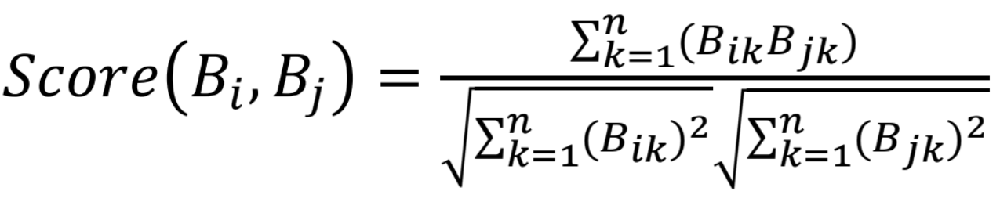

Locall helps members of a neighbourhood get in contact and share any tasks that they may need help with. Users can browse through these tasks, and offer to help their neighbours. Those who post the tasks can also choose to offer payment for these services. It's hard to trust just anyone to help you out with daily tasks, but you can always count on your neighbours!
Created with Flutter and coded in Dart, this iOS app is the 3rd place winner of McMaster's DeltaHacks 7.
View project here.
View Devpost submission here.
A common theme found in online dating is individuals wanting to get as many matches as quickly as possible, often compromising the compatibility of the users. We wanted to find a way to maximize the quality of these pairings in a fun, and more competitive web environment. Our solution? A Bachelor/Bachelorette style dating site which, while still including quick match features found in apps like Tinder and Bumble, takes this up a level by forming groups out of these matched users to then compete to conclude the most compatible match.
This React based projcet was a submission to Hack the North. Coded with a React front-end and a back-end developed with NodeJS and a Cockroach cloud hosted database.
View project here.
View Devpost submission here.
A common feature in e-commerce platforms is the “customers who liked (item a), also liked (item b)” feature. Based off data used in Michelle Craig’s “Personalized Book Recommendation System” I used Ruby’s ActiveRecord to create a database with the following schema:
Books (id, title, author)
Users (id, name)
Ratings (user_id, book_id, rating)
I created a Ruby program which reports the book most similar to a specific title based on user ratings. This is done through treating each book’s ratings as a vector and finding the cosine angle between these two vectors. Ratings range from -5 (hated it), to 0 (no rating), to 5 (loved it). As there are cases in which books have different numbers of ratings, the denominator normalizes the score. The formula used is as follows:

When a user dislikes or likes both books, a positive amount is contributed to the sum in the numerator, when a user dislikes one and likes another, a negative amount is added to the sum. The greater the score, the more similar the two books.
While learning javascript, I created a gradient background tool which allows users to select optimal colours for the background or randomly generate colours. The page displays the rgb codes for their selected colours so they can use them in their own designs. Javascript elements are used to access colours using querySelector( ) which are selected by the user to then convert into the background gradient.
View generator here.
Using C, I created a program which parses a dataset of linear systems, solves them, properly reduces the fraction answers, and finally sorts all computed answers. These linear systems consist of two variables and two equations where all numbers included are fractions (negative numbers included). For example:
ax + by = e
cx - dy = f
//Where a, b, c, d, e, and f are all fractions in the form of n/d (numerators and denominators can be one or two digits)
Any submitted equations are parsed and validated before being solved.
The initial steps of the program consist of file handling; accessing the data from a text file and prepping an output file for all the solved linear systems. The linear systems are then parsed from the provided dataset and the fractions are then further parsed into their own FractionType structure. The constants and variables are accessed, keeping in mind any parenthesis. The linear systems are solved while consistently reducing the numerators and denominators to eliminate the chances of overflow throughout the multiplication processes. The finalized linear systems are sorted respective to their answer sizes and output to the prepared text file.
This created web app uses the Clarifai API to detect and locate a face in a picture. This app is built up of several different parts using React.js for front-end, Node.js and Express.js for backend, and finally a PostgreSQL database to log the number of entries each user has made.